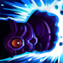

核心裝備
 三相之力
三相之力 殞落王者之劍
殞落王者之劍 死亡之舞
死亡之舞 致死宣告
致死宣告 守護天使
守護天使
以下為本站 7.2d 校正後的標準配置；實戰仍需依敵方陣容調整。


技能優先：Q > E > W
對同一目標的每第三次普攻造成依最大生命計算的額外物理傷害、降低物防並提高攻速；打野時持續鎖定同一隻大型野怪可加快清野。
蓄力後朝指定方向突進，對命中的敵人造成物理傷害並擊退。蓄力越久距離與傷害越高，是主要 Gank、穿牆與撤退工具。
普攻或技能命中敵人可累積層數；主動施放獲得護盾，滿層時還會提高跑速。進場後等承受傷害前再開，能提高黏人與生存能力。

強化下一次普攻，對目標及其後方錐形範圍造成物理傷害。可儲存次數，適合穿插在普攻之間重置輸出節奏。
鎖定敵方英雄後變得無法阻擋並衝向目標，沿途擊開敵人，抵達後造成傷害與擊飛。適合抓後排或保證 Gank 控制。
蓄力1技 → 普攻 → 3技 → 普攻 → 2技護盾
從視野死角蓄力一技命中，接普攻與三技快速觸發三重極限，最後依承傷時機開護盾追擊。
4技鎖定 → 1技追控 → 普攻 → 3技 → 2技
用大絕保證接近目標，落地後再用一技封鎖退路。隊友距離不足時不要單獨啟動。
蓄力1技 → 蓄力中閃現調整角度 → 1技命中 → 3技 → 4技收尾
蓄力期間用閃現調整命中角度，適合越過兵線或突然抓到後排；大絕可留作跟進位移。
第一輪清野以快速升到 5 級為主；有蓄能衝擊時可提早觀察壓線目標。進場前先蓄力並從視野死角接近，命中後穿插普攻與三技，快速觸發被動破甲。
火瀑連擊提供穩定的單點鎖定，物件團優先找敵方主力或沒有淨化手段的目標。大絕進場後立刻判斷要繼續輸出，還是開二技護盾吸收第一波傷害。
後期不要在隊友跟不上時單獨大進五人。可先用一技逼位移，再用大絕鎖定核心；若敵方刺客威脅後排，也能把大絕留作反開與保排。
對局名單是本站依英雄機制與目前配置整理的參考，不等同固定勝率。
打野先維持標準刷野與節奏裝，只有敵方陣容或我方前排需求明顯時才調整。
觸發：敵方前排多，物件團與正面團戰會長時間卡在高生命目標上。
把後期彈性位換成更有效的百分比穿透、削甲或高生命目標傷害。
斷切能直接提高對高生命敵人的普攻傷害。
觸發：敵方能在你進場或搶物件前快速把你秒掉。
魔提斯深淵提供魔防與低血量魔法護盾，比單純增加輸出更能保住進場或持續輸出。
觸發：進場或搶物件時經常被控制鏈直接中斷節奏。
先購買水銀飾帶取得主動解控，之後再合成水星彎刀；水銀飾帶是合成組件，不是另一件要與水星彎刀互換的成裝。
犧牲部分輸出型傳奇符文，換取韌性與緩速抗性。
觸發：敵方前排、鬥士或吸血核心能在物件團長時間回復。
標準配置已經有重創，維持即可。
觸發：我方陣容沒有可靠第一承傷點，團戰需要有人更早進場吸收注意力。
史特拉克手套用生命與低血量護盾增加第一波承傷，讓你能暫時扛起半前排角色。
提醒：「缺前排」不代表所有打野都要改坦裝；刺客、法師與射手打野硬轉坦通常會失去英雄價值。
7.2a 打野正式版：技能名稱依 Riot Games 台灣《激鬥峽谷》菲艾英雄頁校正；出裝、符文、技能順序與實戰方向交叉參考 WildRiftFire 7.2a。Tier 與對局為本站綜合評級。｜v52：完成打野第一批正式版，完整套用李星固定母版，補齊起手裝、核心三件、五件成裝、技能加點、三組連招、對局與前中後期節奏。
本站於 2026-08-27 依 Patch 7.2d 重新檢查此配置。 Tier、出裝、符文與對局屬於 Wild Rift Guide 的整理與分析，不是 Riot Games 官方推薦；版本改動後會再依官方公告與實戰資料校正。